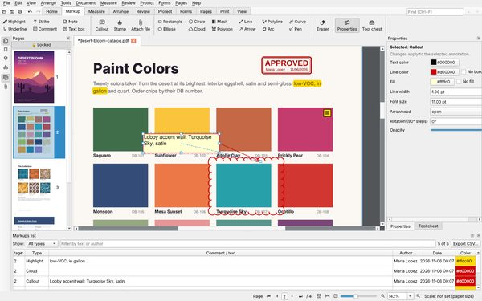
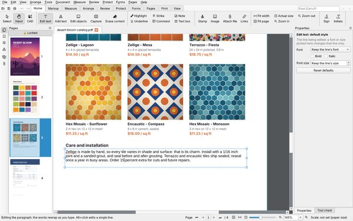
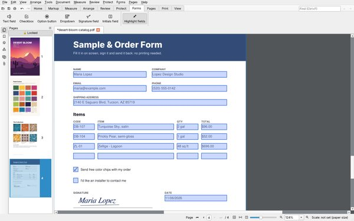
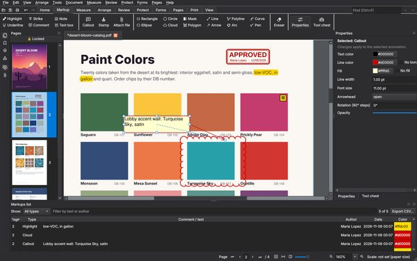
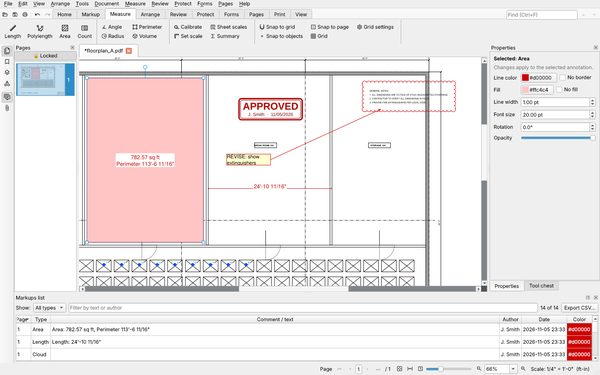

Free PDF markup, measuring and editing
For people who mark up and measure drawings and plans: estimators, engineers, architects and reviewers. Open source, no account, no telemetry, no watermarks.
Newest version from GitHub releases
Linux (AppImage) · Portable for Windows (zip) · macOS (Apple silicon) · All releases · Source code on GitHub
About the Windows warning. Windows warns about programs that aren't code-signed and that it hasn't seen much yet, and every new version counts as new. The code-signing certificate that stops this costs money this free project doesn't spend yet. The warning doesn't mean anything is wrong. If your browser asks, choose Keep; if Windows says "Windows protected your PC", click More info > Run anyway. On a Mac, the first time: System Settings > Privacy & Security > Open Anyway.
Why you can trust it: the source code is public on GitHub, and every download is built by GitHub's own servers straight from that code, only after more than 1,000 automated tests and a self-test of the finished program pass. Each release lists SHA-256 checksums so you can check your copy. No ads, no account, nothing uploaded. Code signing policy
Questions? Write to support@kanzonas.com.

Screenshots

Mark up and review
Edit the PDF’s text
Fill in and sign
Dark theme
Measure to scale


Click a picture to see it full size, then use the arrows to go through them all.
What it does
Measure
Calibrated length, area, perimeter, volume, count, angle and radius, with scales read from title blocks. Dimension markups and an on-screen scale bar.
Mark up and review
Highlights, comments, callouts, shapes, revision clouds and stamps with your name and the date. Legends that list and total the markups, and compare revisions with the changes clouded for you.
Edit the PDF itself
Retype the page’s own text: paragraphs rewrap, and words keep their style or turn bold, italic, another color or size. Move and resize pictures and shapes; add links to anything.
Forms, signatures, redaction
Fill in and create forms, sign by hand or with a certificate, redact for real (hidden text and leftovers too), and recognize text in scanned pages.
Scan
Scan straight into a PDF from a scanner or a network printer that scans, without installing its driver.
Pages, archive and export
Replace a page with its new revision and keep its markups. Combine files, save as PDF/A for archiving, and export to Word, Excel, PowerPoint and AutoCAD DXF.
What's new
A free alternative to Bluebeam Revu and Adobe Acrobat
If you need Bluebeam-style calibration, lengths, areas, volumes and revision clouds, or Acrobat-style forms, signatures, redaction and text editing, but not the price, try KanzonasPDF.
| Feature | KanzonasPDF | Bluebeam Revu | Adobe Acrobat Pro | PDF-XChange Editor |
|---|---|---|---|---|
| Price | Free, open source (AGPL) | Annual subscription | Subscription, or a 3-year license (Acrobat Pro 2024) | Free (its paid features add watermarks), or a license |
| Calibrated measuring (length, area, volume, count) | Yes | Yes | Basic (length, perimeter, area) | Length, perimeter, area |
| Compare revisions (clouds the changes) | Yes | Yes | Compares, marks changes with highlights | Compares (Editor Plus or PRO license) |
| Edit page text and objects | Yes (paragraphs rewrap) | Limited (small changes; text doesn't wrap) | Yes | Yes |
| Portable (USB stick, nothing in the registry) | Yes | No | No | Yes |
| Runs offline, no account | Yes | Bluebeam ID; online every 30 days | Adobe account; a subscription goes online every 30 days | Yes |
Checked against each vendor's own pages in November 2026. Other products change their prices and features, so check their sites before deciding. Bluebeam Revu, Adobe Acrobat and PDF-XChange Editor are trademarks of their owners.
Sources
- Bluebeam: pricing (annual plans), sign in with a Bluebeam ID, working offline, Edit Text, Compare Documents
- Adobe: Acrobat Pro 2024 term license, Compare Files, internet and the 30-day offline period
- PDF-XChange: licensing and watermarks, Compare Documents, measuring tools, portable version
All of it free, with no watermarks, no account and nothing uploaded. Missing something you rely on in Bluebeam or Acrobat? Tell us: that's how most of KanzonasPDF's features got there.
Good to know
- Free and open source (AGPL-3.0)
- Windows, Linux (64-bit PCs) and Mac (Apple silicon, macOS 14.4 or newer)
- Runs offline; nothing is uploaded
- Portable: runs from a USB stick
- Tells you when an update is out
- On a Mac, the first time: System Settings > Privacy & Security > Open Anyway (not signed by Apple yet)
- Light, dark or match-system theme